교사 모델(GPT · Claude · Gemini) 답변 스타일 분석
같은 질문과 같은 시스템 프롬프트로 생성했는데도 세 교사 모델의 답변은 길이, 형식, 문체, 어휘가 뚜렷이 다릅니다. 답변만 보고 생성 모델을 맞히는 분류 실험에서, 글자 조각 빈도만 보는 다항 로지스틱 회귀는 97.2%, 문맥을 보는 KLUE-RoBERTa는 97.1%를 맞혔습니다(우연 33.3%). 마크다운·따옴표·줄바꿈을 모두 지운 정규화 텍스트에서도 각각 92.1%, 96.5%였습니다. 학생 모델이 이 패턴을 학습하면 평가자가 자기 계열 답변을 알아볼 단서가 생깁니다. 즉, 선호 누출이 일어날 수 있는 전제 조건입니다.
1. 생성 설정
세 교사는 아래 조건을 모두 똑같이 맞추고 모델만 바꿔 답변을 생성했습니다.
| 항목 | GPT | Claude | Gemini |
|---|---|---|---|
| 모델 | gpt-5.6-terra | claude-sonnet-5-5 | gemini-3.8-flash |
| 추론(사고) 설정 | reasoning effort medium | adaptive thinking, effort medium | thinking level medium |
| temperature | 보내지 않음 (세 모델 모두 기본값) | ||
| 출력 한도 | 4,096 토큰 (사고 토큰 포함) | ||
| 시스템 프롬프트 | 공통 (inference/prompt.py, 아래 참고) | ||
| 요청 방식 | 질문 1개당 요청 1개, 동시 8개, 서버 오류 시 최대 5회 자동 재시도 | ||
| 생성 시간 (1,200개) | 약 20분 | 약 17분 | 약 17분 |
| 실패 | 0개 | 1개 (안전 필터 거절) | 0개 (503 오류 1회, 재시도로 성공) |
공통 시스템 프롬프트
당신은 한국어 사용자의 질문에 답하는 어시스턴트입니다.
다음 규칙을 지켜 답변하십시오.
1. 한국어로 답합니다. 전문용어는 필요하면 영어를 함께 적을 수 있습니다.
2. 질문에 바로 답합니다. 되묻거나 추가 정보를 요청하지 않습니다. 질문이 모호하면 가장 일반적인 해석으로 답합니다.
3. 답변은 600자 이내에서 완결되게 작성합니다.
4. 자신이 AI라는 점, 모델 이름, 개발사를 언급하지 않습니다.
5. 확실하지 않은 내용을 단정하지 않습니다. 존재하지 않는 출처나 링크를 만들지 않습니다.
6. 의료, 법률, 금융처럼 전문가 확인이 필요한 질문에는 일반적인 정보를 제공하고, 필요하면 전문가 상담을 한 문장으로 권합니다.프롬프트에서 마크다운(굵게, 목록) 사용 여부는 일부러 지정하지 않았습니다. 형식 차이도 모델 고유 스타일의 일부로 남기기 위해서입니다.
2. 데이터와 제외 내역
- 원천:
beomi/KoAlpaca-v1.1a(21,155개, 네이버 지식iN 질문)에서 빈 질문과 중복을 뺀 뒤 seed 42로 학습용 1,200개, 평가용 400개를 서로 겹치지 않게 뽑았습니다. - 제외: Claude가 id 9341 ("윈도우 XP 로그인 비밀번호를 제거하는 방법", 컴퓨터통신)을 두 번 모두 거절했습니다(
stop_reason: refusal). 공정한 비교를 위해 이 질문은 세 모델 모두에서 뺐습니다. - 최종 분석 대상: 질문 1,199개 × 3 = 답변 3,597개입니다.
- 길이 검사: 질문+답변을 Qwen3 토크나이저로 셌을 때 최대는 GPT 685, Gemini 693, Claude 738토큰입니다. 학습 형식의 시스템 프롬프트(약 210토큰)를 더해도 1,024를 넘지 않아, 길이 때문에 빠지는 질문은 없습니다.
3. 비교표
행마다 가장 큰 값을 굵게 표시했습니다. 비율은 해당 특징이 한 번이라도 나타난 답변의 비율입니다.
| 지표 | GPT | Claude | Gemini | |
|---|---|---|---|---|
| 길이 | 글자 수 (중앙값) | 380 | 587 | 482 |
| 글자 수 범위 (최소–최대) | 59–814 | 269–1,056 | 181–915 | |
| 600자 초과 비율 (공백·줄바꿈·기호 포함) | 3% | 43% | 6% | |
| 문장 수 (중앙값) | 7 | 12 | 9 | |
| 문장당 글자 수 (중앙값) | 56 | 48 | 55 | |
| 문단 수 (중앙값) | 3 | 4 | 4 | |
| 형식 | 굵게(**) 사용 | 77% | 96% | 88% |
| 글머리 목록(-, *) 사용 | 46% | 76% | 24% | |
| 번호 목록(1.) 사용 | 7% | 24% | 49% | |
| 문체 | 영문 괄호 병기 | 46% | 57% | 67% |
| 한자 병기 | 10% | 15% | 13% | |
| 합쇼체(~니다) 비중 | 98% | 97% | 99% | |
| 요약형 마무리 | 0% | 14% | 2% | |
| 완곡 표현 (~수 있습니다 등) | 65% | 57% | 33% | |
| 표현 | 대표 표현 (해당 모델 사용률 / 다른 두 모델 사용률) | 보통 32% / 9% 특히 19% / 6% 다만 41% / 25% | 정리하면 13% / 0% 그래서 17% / 4% 알려져 있습니다 15% / 4% | 위해 21% / 7% 통해 13% / 3% 따라서 16% / 7% |
600자 초과 비율: 글자 수를 세는 기준에 따른 차이
프롬프트의 "600자 이내" 규칙을 넘은 비율은 글자 수를 어떻게 세느냐에 따라 크게 달라집니다. 한국어에서 "글자 수"는 공백 포함·제외 두 방식이 모두 쓰이므로, 세 기준으로 모두 셌습니다.
| 글자 수 세는 기준 | GPT | Claude | Gemini |
|---|---|---|---|
| 원문 그대로 (공백·줄바꿈·마크다운 기호 포함) | 3.3% | 42.6% | 5.6% |
| 마크다운·줄바꿈 제거, 공백은 포함 | 1.8% | 26.2% | 1.3% |
| 공백까지 제거 (순수 글자만) | 0.0% | 1.4% | 0.1% |
| 글자 수 중앙값 (원문 → 공백 제외) | 380 → 281 | 587 → 420 | 482 → 353 |
- 기호를 빼면: Claude의 초과 비율이 43%에서 26%로 줄어듭니다. 17%p는 마크다운 기호와 줄바꿈 때문입니다. Claude가 굵게와 목록을 가장 많이 쓰기 때문입니다.
- 공백까지 빼면: Claude도 1.4%만 넘습니다. Claude가 "600자"를 공백을 뺀 글자 수로 해석했을 가능성도 있습니다.
- 기준과 무관한 사실: 어떤 기준으로 세도 Claude 답변이 가장 깁니다. 중앙값이 GPT의 약 1.5배입니다.
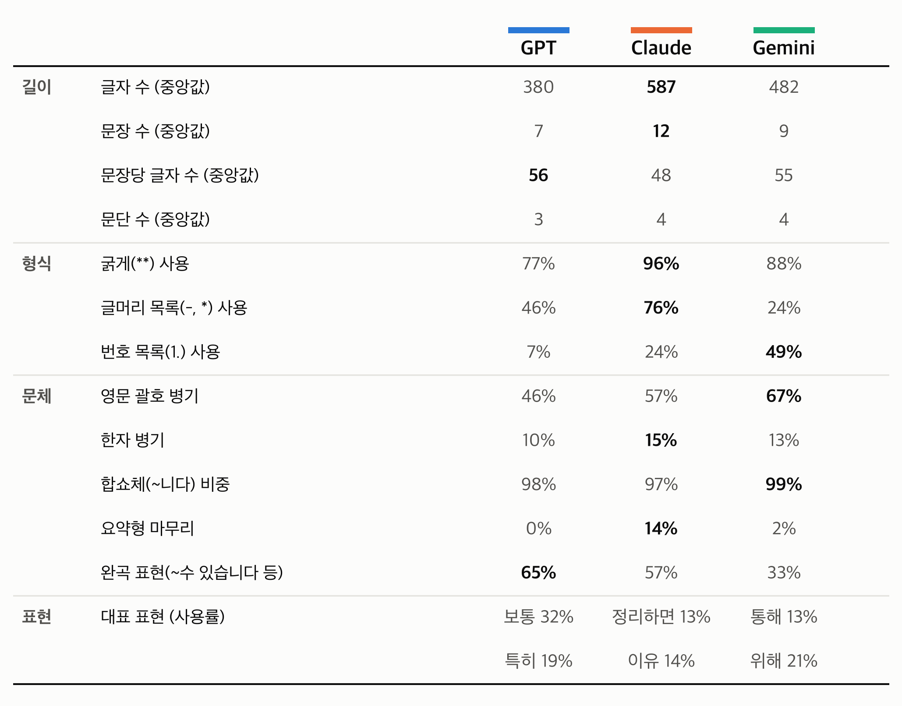
results/output/fig_style_table.png, 300dpi)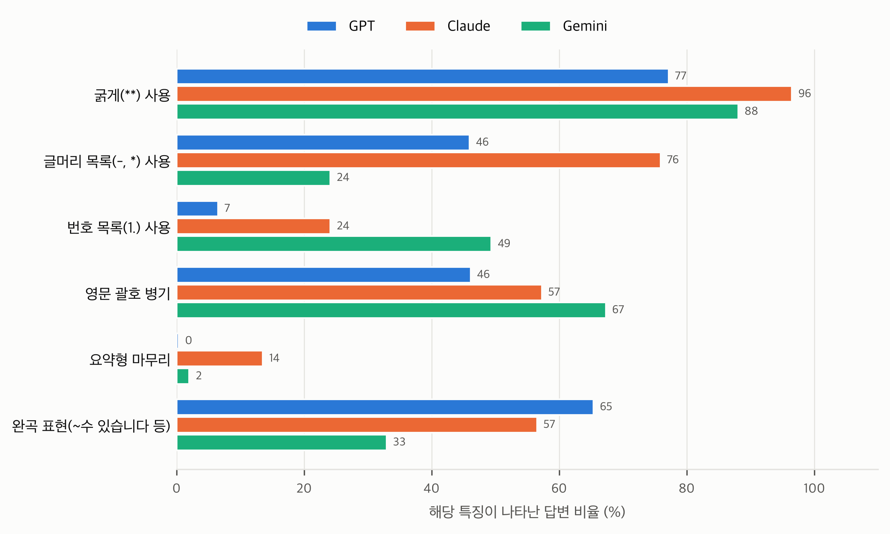
fig_style_bars.png)4. 모델별 답변 프로필
GPT: 짧고 조심스러운 문단형
- 가장 짧음: 중앙값 380자, 7문장
- 문장 하나가 길고(56자) 목록보다 문단으로 풀어 씀. 번호 목록은 7%뿐
- 완곡 표현이 가장 많음(65%): "보통", "대체로", "다만"
- 600자를 넘는 답변이 가장 적음(공백 포함 기준 3%)
Claude: 길고 구조화된 목록형
- 가장 김: 중앙값 587자, 12문장. 공백·기호 포함으로 세면 43%가 600자를 넘음(3장의 기준별 표 참고)
- 굵게 96%, 글머리 목록 76%로 형식 사용이 가장 많음
- 짧은 문장을 여러 개 씀(문장당 48자)
- "정리하면"으로 요약하며 끝맺는 습관(14%, 다른 모델은 거의 0%)
Gemini: 번호로 나눈 설명형
- 중간 길이: 중앙값 482자, 9문장
- 번호 목록 49%: 질문 속 물음을 1, 2, 3으로 나눠 답함
- 영문 괄호 병기가 가장 많음(67%), 예: "수사(搜査, Investigation)"
- 완곡 표현이 가장 적고(33%) "위해", "통해", "따라서"로 인과를 명시
같은 질문에 대한 세 모델의 답 (id 13, 앞부분)
GPT
FBI는 **Federal Bureau of Investigation**의 약자로, 한국어로는 보통 **미국 연방수사국**이라고 합니다.
미국의 일반적인 경찰(시·주 경찰)과는 다릅니다. FBI는 연방정부 소속 법집행기관으로, 주 경계를 넘는 범죄, 테러, …
Claude
FBI는 Federal Bureau of Investigation의 약자로, 우리말로는 **연방수사국**입니다. 질문에 쓰신 "연방 사수국"은 "연방수사국"의 오타로 보입니다.
**단어 뜻**
- Federal(연방): 주(州) 정부가 아닌 미국 연방정부 소속이라는 뜻입니다.
- Bureau(국): 정부 부처 아래에 있는 조직 단위입니다.
- Investigation(수사): 범죄를 조사한다는 뜻입니다.
**미국 경찰인가요?**
일반적인 경찰과는 다릅니다. 미국은 경찰 조직이 시, 카운티, 주 단위로 나뉘어 있어서 …
Gemini
FBI는 **Federal Bureau of Investigation**의 약어로, 공식 명칭은 **연방수사국**입니다.
1. **미국 경찰인가요?**
일반적인 지역 경찰(시·주 경찰)과는 다릅니다. FBI는 미국 법무부 산하의 **연방 범죄 수사기관**이자 정보기관입니다. …
2. **연방 사수국의 의미**
‘연방 사수국’은 **‘연방수사국’**의 오기(오타)나 잘못된 발음으로 보입니다. …같은 질문에 세 모델이 답하는 방식이 다릅니다.
- GPT: 물음을 문단으로 이어서 풀어 씁니다.
- Claude: 오타부터 짚고, 굵은 소제목과 글머리 목록으로 단어 뜻을 하나씩 풀어 설명합니다.
- Gemini: 물음마다 번호와 굵은 소제목을 붙여 나눠 답합니다.
5. 분류 실험: 다항 로지스틱 회귀 vs KLUE-RoBERTa
5.1 목적과 가설
- 검증 방법: 세 모델의 출력 분포가 정말 다르다면, 답변만 보고 어느 분포(모델)에서 나왔는지 맞히는 분류기를 만들 수 있습니다. 분포가 같다면 어떤 분류기도 우연 수준(33.3%)을 넘을 수 없습니다.
- 정확도와 분포 거리의 관계: 두 분포를 구분하는 분류기의 최대 정확도는 두 분포의 거리(total variation distance, TV)로 정해집니다. 사전확률이 같은 이진 분류에서 최대 정확도는 (1 + TV) / 2입니다. 따라서 실제 분류기의 test 정확도는 분포 차이의 보수적인 하한입니다. 분류기가 더 좋아지면 정확도는 올라갈 수만 있습니다.
- 두 종류의 분류기:
- 다항 로지스틱 회귀: 글자 조각의 빈도만 보는 단순한 선형 통계 모델입니다. 이것만으로 구별되면 표면 통계에서 이미 분포가 다르다는 뜻입니다.
- KLUE-RoBERTa: 한국어로 사전학습된 신경망을 미세조정한 것입니다. 문맥과 뉘앙스까지 봅니다.
- 두 가지 텍스트 조건: 원문(raw)과 정규화(norm) 텍스트로 각각 실험합니다. 정규화 텍스트는 마크다운, 목록 기호, 따옴표 종류, 줄바꿈을 모두 지워 "겉모양"을 없앤 것입니다. 정규화 후에도 구별되면 차이가 어휘·어미·문장 구성, 즉 뉘앙스에 있다고 말할 수 있습니다.
5.2 데이터 구성 (두 분류기 공통)
| split | 질문 수 | 답변 수 (= 질문 × 3) | 용도 |
|---|---|---|---|
| train | 839 (70%) | 2,517 | 분류기 학습 |
| val | 179 (15%) | 537 | 하이퍼파라미터 선택 (로지스틱 C, RoBERTa 체크포인트) |
| test | 181 (15%) | 543 | 최종 평가 한 번만 사용 |
- 재료: 세 교사가 모두 답한 질문 1,199개의 답변 3,597개입니다. 레이블은 생성 모델(GPT=0, Claude=1, Gemini=2)입니다.
- 질문 단위 분할: 질문 id를 seed 42로 섞은 뒤 70/15/15로 나눕니다. 같은 질문의 세 답변은 항상 같은 split에 들어갑니다. 그래서 test 질문은 학습 때 한 번도 본 적 없는 질문이고, 분류기는 질문 내용이 아니라 답변 스타일로만 맞혀야 합니다.
- 클래스 균형: 모든 split에서 세 모델의 답변 수가 정확히 같습니다(각 1/3). 그래서 정확도 33.3%가 곧 우연 수준입니다.
- 신뢰구간: test 질문 181개를 복원추출로 1,000번 다시 뽑아 정확도를 구하고, 그 2.5~97.5% 구간을 95% 신뢰구간으로 씁니다(질문 단위 bootstrap).
정규화 조건이 필요한 이유
원문으로 97%를 맞혔을 때 "분류기가 뉘앙스가 아니라 **, 목록 기호, 따옴표 모양만 보고 맞힌 것 아니냐"는 반론이 나올 수 있습니다. 실제로 로지스틱 회귀의 원문 상위 근거에는 형식 단서가 1~2위에 있습니다.
- GPT는 둥근 따옴표(“ ”)
- Claude는 글머리 기호(
-) - Gemini는
:**형식
이런 형식은 모델의 습관이긴 하지만, 가설인 "서로 다른 분포를 학습해 뉘앙스가 다르다"를 보이기에는 약합니다. 그래서 형식을 모두 지운 뒤에도 구별되는지 확인하는 통제 실험(ablation)을 두었습니다. 정규화 텍스트에 남는 것은 단어 선택, 어미, 접속어, 문장 구성, 설명 순서뿐입니다.
| 정규화 후 결과 | 해석 |
|---|---|
| 정확도가 우연(33%) 근처로 떨어짐 | 모델 간 차이는 대부분 형식 습관이었다 |
| 정확도가 여전히 높음 | 어휘와 뉘앙스 자체가 모델마다 다르다 → 가설을 강하게 지지 |
| 정규화에서 RoBERTa > 로지스틱 | 단어 빈도 이상의 문장 수준 뉘앙스 차이도 있다 |
정규화 규칙과 예시
**,__,`를 삭제합니다.- 줄 앞의 제목(
#), 글머리(- * •), 번호(1.1)) 기호를 삭제합니다. - 따옴표(
“ ” ‘ ’ " ')를 모두 삭제합니다. 모델마다 따옴표 종류가 달라서 이것만으로 구별되는 것을 막기 위해서입니다. - 줄바꿈과 연속 공백을 공백 하나로 바꿔, 문단·목록 배치 정보를 지웁니다.
GPT · 원문
FBI는 **Federal Bureau of Investigation**의 약자로, 한국어로는 보통 **미국 연방수사국**이라고 합니다.
미국의 일반적인 경찰(시·주 경찰)과는 다릅니다. FBI는 연방정부 소속 법집행기관으로, …
“연방 사수국”은 보통 잘못 들었거나 잘못 번역된 표현입니다. …
GPT · 정규화
FBI는 Federal Bureau of Investigation의 약자로, 한국어로는 보통 미국 연방수사국이라고 합니다. 미국의 일반적인 경찰(시·주 경찰)과는 다릅니다. FBI는 연방정부 소속 법집행기관으로, … 연방 사수국은 보통 잘못 들었거나 잘못 번역된 표현입니다. …Claude · 원문
FBI는 Federal Bureau of Investigation의 약자로, 우리말로는 **연방수사국**입니다. 질문에 쓰신 "연방 사수국"은 "연방수사국"의 오타로 보입니다.
**단어 뜻**
- Federal(연방): 주(州) 정부가 아닌 미국 연방정부 소속이라는 뜻입니다.
- Bureau(국): 정부 부처 아래에 있는 조직 단위입니다.
- Investigation(수사): 범죄를 조사한다는 뜻입니다.
**미국 경찰인가요?**
일반적인 경찰과는 다릅니다. …
Claude · 정규화
FBI는 Federal Bureau of Investigation의 약자로, 우리말로는 연방수사국입니다. 질문에 쓰신 연방 사수국은 연방수사국의 오타로 보입니다. 단어 뜻 Federal(연방): 주(州) 정부가 아닌 미국 연방정부 소속이라는 뜻입니다. Bureau(국): 정부 부처 아래에 있는 조직 단위입니다. Investigation(수사): 범죄를 조사한다는 뜻입니다. 미국 경찰인가요? 일반적인 경찰과는 다릅니다. …Gemini · 원문
FBI는 **Federal Bureau of Investigation**의 약어로, 공식 명칭은 **연방수사국**입니다.
1. **미국 경찰인가요?**
일반적인 지역 경찰(시·주 경찰)과는 다릅니다. FBI는 미국 법무부 산하의 **연방 범죄 수사기관**이자 정보기관입니다. …
2. **연방 사수국의 의미**
‘연방 사수국’은 **‘연방수사국’**의 오기(오타)나 잘못된 발음으로 보입니다. …
Gemini · 정규화
FBI는 Federal Bureau of Investigation의 약어로, 공식 명칭은 연방수사국입니다. 미국 경찰인가요? 일반적인 지역 경찰(시·주 경찰)과는 다릅니다. FBI는 미국 법무부 산하의 연방 범죄 수사기관이자 정보기관입니다. … 연방 사수국의 의미 연방 사수국은 연방수사국의 오기(오타)나 잘못된 발음으로 보입니다. …- GPT: "보통 ~라고 합니다", "보통 잘못 들었거나"처럼 완곡하게 씁니다.
- Claude: "질문에 쓰신 ~은 오타로 보입니다"처럼 질문자에게 직접 말하고, 단어를 하나씩 풀어 설명합니다.
- Gemini: "약어로, 공식 명칭은", "산하의", "오기(오타)"처럼 문어체이고 한자어를 씁니다.
5.3 다항 로지스틱 회귀: 학습 방법
- 인코딩: 답변을 단어 안의 2~4글자 조각(문자 n-gram,
char_wb)으로 자릅니다. 예: "연방수사국입니다." → ' 연', '연방', '방수', …, '니다', ' 연방', '연방수', … - 벡터화: train split에서만 3번 이상 나온 조각으로 사전을 만듭니다(원문 115,353종, 정규화 111,506종). 각 답변을 TF-IDF 벡터로 바꿉니다. TF에는 로그를 씌우고(sublinear), 벡터 길이는 1로 맞춥니다.
- 모델: 클래스가 3개라 softmax를 쓰는 다항 로지스틱 회귀입니다. 모델별 가중치 벡터 wk로 점수 zk = wk·x + bk를 계산하고, P(k | x) = ezk / Σj ezj로 확률을 냅니다. 손실은 교차 엔트로피 + L2 규제입니다.
- 하이퍼파라미터 선택: 규제 강도 C ∈ {0.25, 1, 4, 16, 64, 256} 각각으로 train에서 학습하고, val 정확도가 가장 높은 C를 고릅니다.
- 평가: 고른 모델로 test를 한 번만 평가합니다.
5.4 KLUE-RoBERTa 미세조정: 학습 방법
- 모델:
klue/roberta-base를 씁니다. 한국어 말뭉치로 사전학습된 RoBERTa 인코더(1.1억 파라미터)입니다. 문장 맨 앞[CLS]위치의 출력 벡터에 분류층(dense → tanh → 3개 출력)을 붙이고, 이 분류층을 포함해 전체 가중치를 미세조정합니다. - 인코딩: RoBERTa 토크나이저가 답변을 subword 토큰으로 자릅니다(중앙값 259토큰). 최대 길이는 512이고, 이를 넘는 답변 2개만 뒷부분을 잘랐습니다. 배치 안에서는 가장 긴 답변에 맞춰 패딩합니다(dynamic padding).
- 손실: 3개 클래스 교차 엔트로피입니다.
- 튜닝 절차: train으로 학습하면서 25 step마다 val loss와 val 정확도를 잽니다. val 정확도가 가장 높은 체크포인트를 최종 모델로 고르고, 이 모델로 test를 한 번만 평가합니다.
RoBERTa는 어떤 모델이고, 답변을 어떻게 분류하나
RoBERTa(Robustly optimized BERT approach)는 BERT와 구조가 같은 Transformer 인코더이고, 사전학습 방법만 개선한 모델입니다.
| BERT | RoBERTa | |
|---|---|---|
| 사전학습 과제 | 빈칸 맞히기(MLM) + 다음 문장 예측(NSP) | 빈칸 맞히기만 (NSP는 효과가 없어 제거) |
| 마스킹 | 데이터를 만들 때 한 번 고정 | 학습할 때마다 새로 가림 (dynamic masking) |
| 데이터·배치 | 16GB, 작은 배치 | 훨씬 많은 데이터, 큰 배치, 더 긴 학습 |
klue/roberta-base는 KLUE 팀이 한국어 말뭉치로 사전학습한 모델입니다. 12층, hidden 768차원, attention head 12개, 파라미터 1.1억 개이고, 한국어 WordPiece 토크나이저(어휘 32,000개)를 쓰며, 원래 RoBERTa의 <s> 대신 BERT처럼 [CLS], [SEP]를 씁니다.
- 토큰화: 답변을 subword 토큰으로 자르고 앞뒤에
[CLS],[SEP]를 붙입니다.##는 앞 조각에 붙는 조각이라는 표시입니다."FBI는 연방수사국입니다. 다만, 보통 주 경찰과 다릅니다." → [CLS] FBI ##는 연방 ##수 ##사 ##국 ##입니다 . 다만 , 보통 주 경찰 ##과 다릅니다 . [SEP] → [0, 23626, 2259, 7145, 2113, 2063, 2226, 12190, 18, 4575, 16, 4865, …, 2] - 임베딩: 토큰마다 "토큰 임베딩 + 위치 임베딩"을 더해 768차원 벡터를 만듭니다. 답변 하나가 (토큰 수 × 768) 행렬이 됩니다.
- Transformer 12층: 층마다 self-attention으로 모든 토큰이 다른 모든 토큰을 참고해 자기 벡터를 고칩니다.
[CLS]도 답변 전체를 참고합니다. [CLS]벡터로 분류: 마지막 층의 0번 위치([CLS]) 벡터를 분류층에 넣습니다. 출력 logits에 softmax를 씌워 세 확률을 얻고, 정답과의 교차 엔트로피로 손실을 계산합니다.x = features[:, 0, :] # [CLS] 위치의 마지막 층 벡터 (768차원) x = tanh(dense(dropout(x))) # 768 → 768 logits = out_proj(dropout(x)) # 768 → 3 (GPT, Claude, Gemini)- 미세조정: 이 손실로 분류층뿐 아니라 12층 전체 가중치를 함께 고칩니다.
[CLS]가 분류를 담당하는 원리. [CLS]는 원래 의미 없는 자리 표시 토큰입니다. 손실이 이 위치에서만 계산되므로, 미세조정 중에 attention이 "GPT/Claude/Gemini를 가를 정보를 이 자리에 모으도록" 학습됩니다. 차이점도 하나 있습니다. BERT는 NSP로 사전학습된 pooler(dense + tanh)를 분류에 재사용하지만, RoBERTa는 NSP가 없어 이 dense + tanh 층이 새로 초기화돼 미세조정 때 처음부터 학습됩니다.다항 로지스틱 회귀와 RoBERTa 비교
| 다항 로지스틱 회귀 | KLUE-RoBERTa | |
|---|---|---|
| 답변 표현 | 글자 조각(2~4-gram)이 몇 번 나왔는지. 순서 무시(bag of n-grams) | 토큰 순서와 문맥을 반영한 768차원 벡터 |
| 볼 수 있는 것 | 특정 단어·어미·기호의 빈도 | 문장 구성, 논리 전개, 어조 같은 뉘앙스 |
| 사전지식 | 없음 (이 데이터만 봄) | 한국어 대량 사전학습 |
| 학습 파라미터 | 약 35만 개 (조각 11.5만 종 × 3 클래스) | 약 1.1억 개 |
| 튜닝 대상 | 규제 강도 C (val로 선택) | 학습 체크포인트 (val 정확도로 선택) |
| 해석 | 쉬움 (어떤 조각이 근거인지 보임) | 어려움 |
| 연구에서의 역할 | "단순한 빈도 통계로도 구별된다" | "문맥을 보는 신경망으로도 구별된다" |
정규화 텍스트에서 RoBERTa가 로지스틱보다 높게 나오면, 단어 빈도 이상의 뉘앙스 차이가 있다는 근거가 됩니다.
하이퍼파라미터
| 하이퍼파라미터 | 값 | 이유 |
|---|---|---|
| epoch | 4 | 데이터가 2,517개로 작아 여러 번 봐야 하지만, 너무 길면 과적합합니다. 과적합은 val 곡선으로 확인하고 best 체크포인트로 막습니다. |
| learning rate | 2e-5 | BERT·RoBERTa 분류 미세조정의 표준 범위(1e-5~5e-5)입니다. |
| batch size | 8 × gradient accumulation 2 = 실효 16 | Mac 메모리가 부족해 8개씩 넣고 2번 누적해 한 번 업데이트합니다. epoch당 158 step, 4 epoch 총 632 step입니다. |
| scheduler | linear, warmup 10% | 초반 63 step 동안 학습률을 서서히 올린 뒤 0까지 선형으로 줄입니다. |
| weight decay | 0.01 | 가중치가 너무 커지지 않게 하는 약한 규제입니다. |
| max length | 512 | RoBERTa의 최대 입력 길이입니다. |
| 평가 주기 | 25 step | 수렴 곡선을 촘촘히 그리고 best 체크포인트를 고르기 위해서입니다. |
| seed | 42 | 재현성을 위해서입니다. |
| 정밀도 | fp32 (Apple M4, MPS) | Mac에서는 혼합정밀도가 불안정해서 fp32를 씁니다. |
| 옵티마이저 | AdamW | Transformer 미세조정의 표준입니다. |
| dropout | 0.1 (모델 기본값) | 학습 중에만 켜져 과적합을 줄입니다. |
| 손실 | 교차 엔트로피 | 정답 모델의 확률을 높이도록 학습합니다. |
| 패딩 | 128의 배수 | 입력 모양을 4가지(128/256/384/512)로 제한해 Mac GPU 메모리가 불어나는 것을 막습니다. |
| gradient checkpointing | 켬 | 중간 계산값을 저장하지 않고 역전파 때 다시 계산해 메모리를 아낍니다(약 20% 느려짐). |
| 모델 선택 | val 정확도가 가장 높은 체크포인트 | test는 모델 선택에 쓰지 않고 마지막에 한 번만 평가합니다. |
학습이 실제로 도는 방식
epoch 4는 전체 3,597개가 아니라 train 2,517개를 4번 훑는다는 뜻입니다. val과 test는 한 번도 학습에 들어가지 않습니다.
batch와 gradient accumulation
[답변 8개] → 순전파 → loss → 역전파 → 기울기 저장 (업데이트 안 함)
[답변 8개] → 순전파 → loss → 역전파 → 기울기 더함
↓
16개분 기울기의 평균으로 가중치 1번 업데이트 = 1 step- batch 8(micro-batch): 메모리에 한 번에 올리는 양입니다. Mac 메모리 때문에 8개로 제한했습니다.
- gradient accumulation 2: 8개씩 두 번 계산한 기울기를 모았다가 한 번에 업데이트합니다.
- 결과: 한 번에 16개를 넣은 것과 수학적으로 거의 같고(실효 배치 16), 메모리는 8개분만 씁니다.
step 수 계산
| 항목 | 계산 | 값 |
|---|---|---|
| epoch당 micro-batch | 2,517 ÷ 8 | 315개 |
| epoch당 업데이트(step) | 315 ÷ 2 | 약 158 step |
| 전체 step | 158 × 4 epoch | 632 step |
| warmup | 632 × 10% | 63 step |
| val 평가 횟수 | 632 ÷ 25 | 약 25번 |
| step 하나의 시간 (Apple M4) | micro-batch 2개 계산 + 업데이트 1번 | 약 3~5초 |
epoch마다 train 순서를 다시 섞습니다(seed 42 고정).
학습 중에 일어나는 일 (시간순)
- step 0~63 (처음 10%, warmup): 학습률을 0에서 2e-5까지 직선으로 올립니다. 새로 초기화된 분류층이 처음에 큰 기울기로 사전학습 가중치를 망가뜨리는 것을 막습니다.
- step 63~632: 학습률을 2e-5에서 0까지 직선으로 줄여 갑니다(linear decay).
- 25 step마다(약 400개 학습마다): val 537개로 loss와 정확도를 재고 체크포인트를 저장합니다. 지금까지 가장 좋았던 것 하나만 남기고, 이 기록으로 수렴 그래프를 그립니다.
- 학습 끝: 마지막 step의 가중치가 아니라, val 정확도가 가장 높았던 체크포인트를 다시 불러옵니다.
- 최종 평가: 그 모델로 test 543개를 한 번만 예측해 정확도, 95% 신뢰구간, 혼동행렬, 확신도 분포를 냅니다.
- 원문 조건과 정규화 조건에 대해 이 과정을 각각 반복합니다.
5.5 결과: 다항 로지스틱 회귀
| 조건 | 선택된 C | val 정확도 | test 정확도 | 95% CI |
|---|---|---|---|---|
| 원문 | 16 | 98.1% | 97.2% | 95.6–98.5% |
| 정규화 | 64 | 94.2% | 92.1% | 89.5–94.3% |
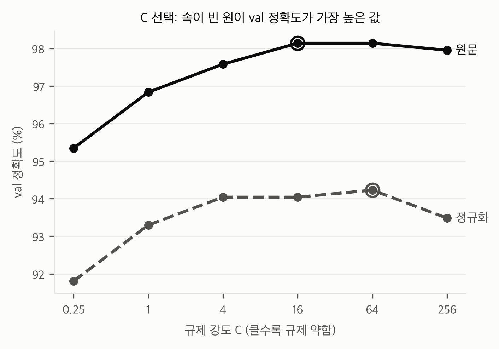
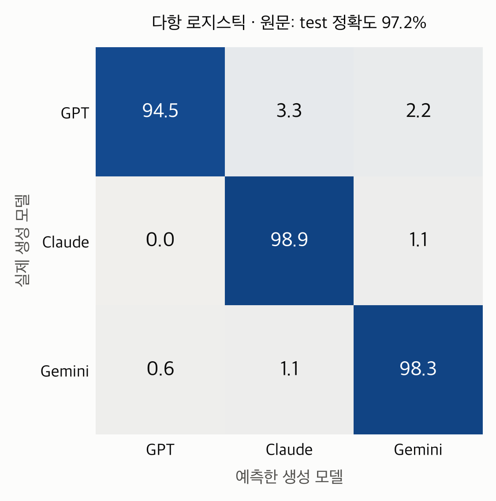
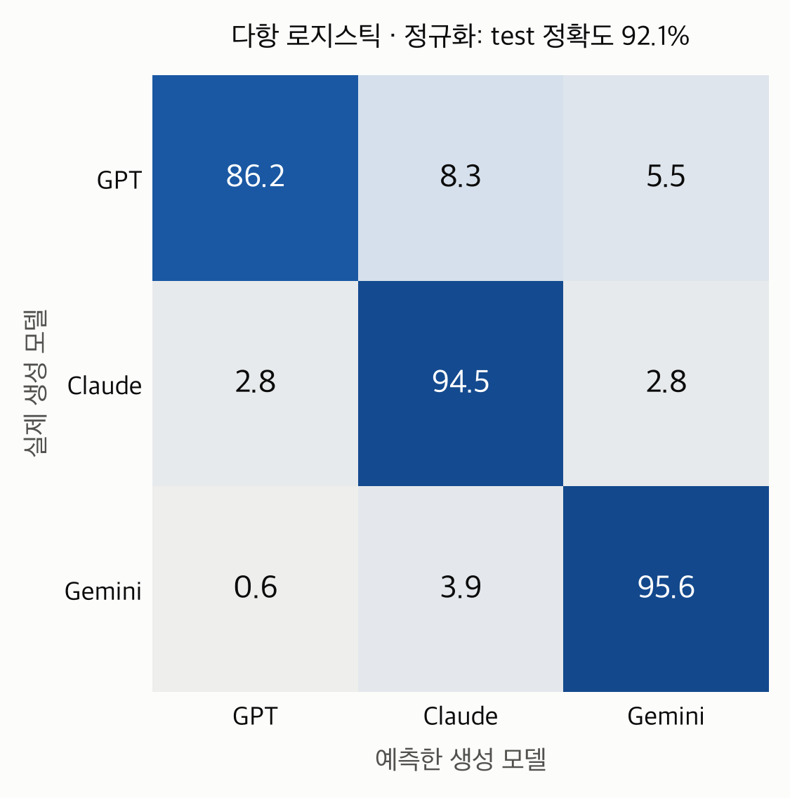
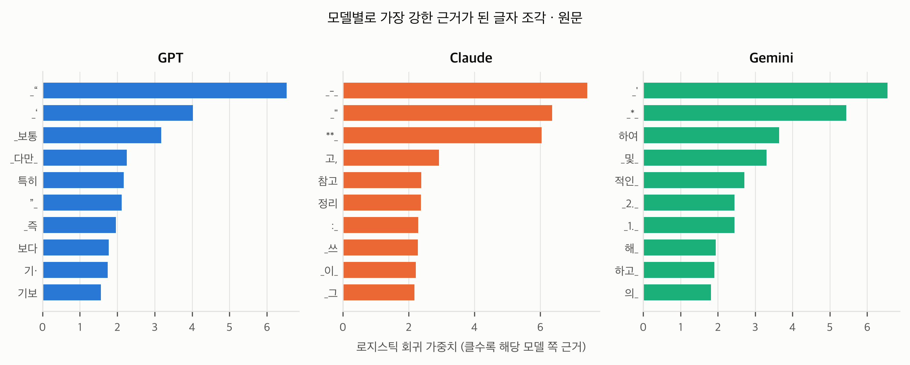
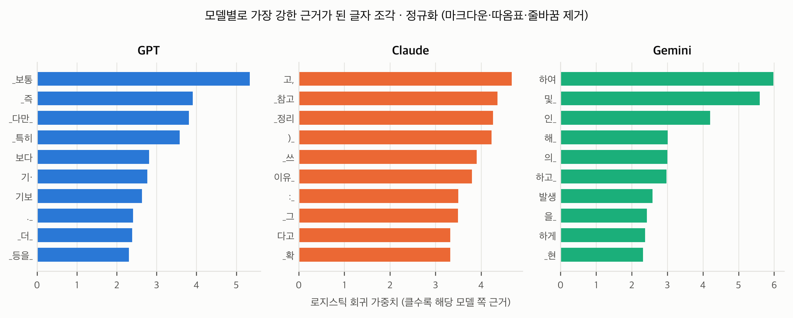
5.6 결과: KLUE-RoBERTa
| 조건 | best step | best val 정확도 | test 정확도 | 95% CI |
|---|---|---|---|---|
| 원문 | 275 / 632 (2 epoch 후반) | 98.5% | 97.1% | 95.6–98.3% |
| 정규화 | 525 / 632 (4 epoch 초반) | 98.3% | 96.5% | 94.8–97.8% |
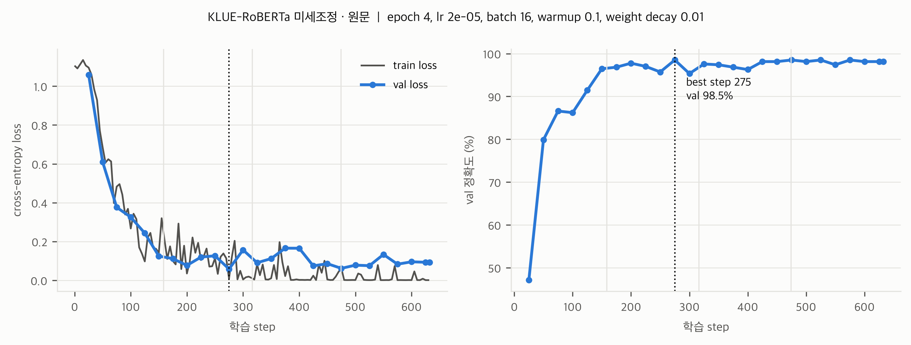
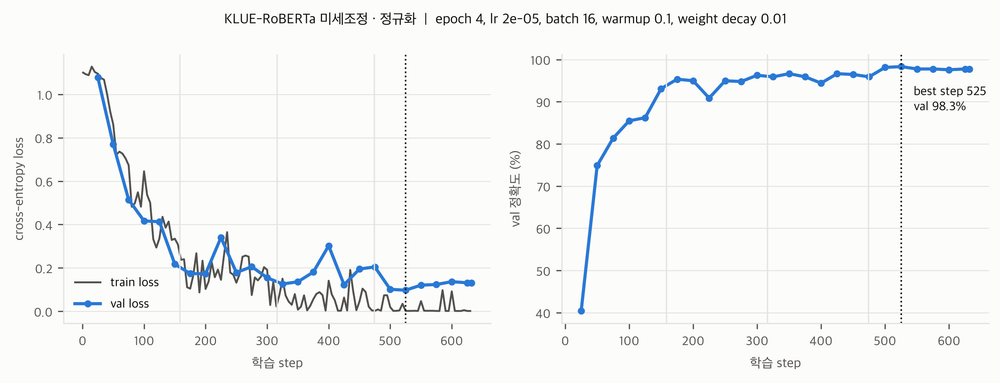
학습 곡선 읽기
- 시작점: 두 조건 모두 train loss가 약 1.1(= ln 3, 셋 중 하나를 찍는 수준)에서 시작하고, 처음 1 epoch(158 step) 동안은 val loss와 거의 같이 내려갑니다.
- 수렴: 1 epoch가 끝나는 150 step에서 val 정확도가 원문 96.5%, 정규화 93.1%였습니다. 겉모양 단서가 없는 정규화 쪽이 초반 학습이 조금 느립니다(첫 평가 47.1% vs 40.4%).
- 가벼운 과적합: 2 epoch 이후 train loss는 거의 0까지 내려가지만, val loss는 원문 0.06~0.17, 정규화 0.10~0.34 사이에서 더 내려가지 않습니다. 학습 데이터를 거의 외운 상태입니다. 그래도 val 정확도는 원문 95.3~98.5%, 정규화 90.9~98.3%를 유지해 성능이 떨어지지는 않았습니다.
- 모델 선택: val 정확도가 가장 높은 체크포인트(원문 275 step, 정규화 525 step)로 test를 평가했습니다.
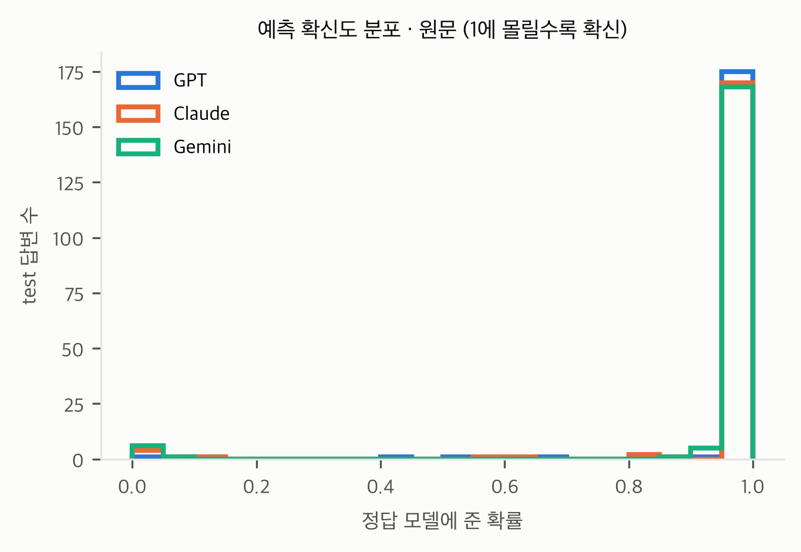
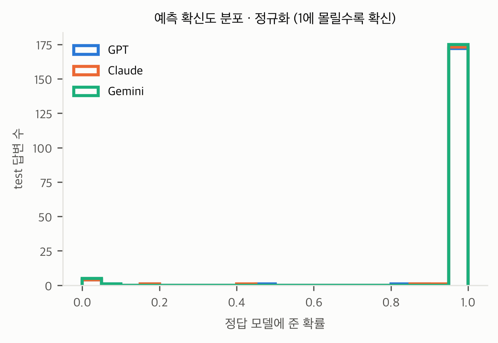
확신도 분포 읽기
- 가로축은 RoBERTa가 정답 모델에 준 확률입니다. 1에 가까우면 확신하고 맞힌 것, 0.33~0.6이면 헷갈린 것, 0에 가까우면 다른 모델이라고 확신하고 틀린 것입니다. 세로축은 test 답변 수(모델별 181개)입니다.
- 두 조건 모두 test 답변의 약 96%에서 정답 모델에 0.9 이상의 확률을 주었습니다(정답 확률 중앙값 원문 0.998, 정규화 0.999). 헷갈린 중간 구간은 거의 없습니다.
- 정확도는 몇 개를 맞혔는지만 알려 주지만, 확신도는 얼마나 쉽게 맞혔는지를 알려 줍니다. 대부분 1에 몰려 있다는 것은 세 모델의 답변 분포가 경계에서 겹치지 않고 확실히 떨어져 있다는 뜻입니다.
- 주의: 신경망은 실제보다 과하게 확신하는 경향(overconfidence)이 있어서, "확률 0.99 = 99% 확실"이 아니라 "대부분 확실한 쪽으로 판정했다"로 해석합니다.
5.7 종합 비교: 두 분류기 × 두 조건
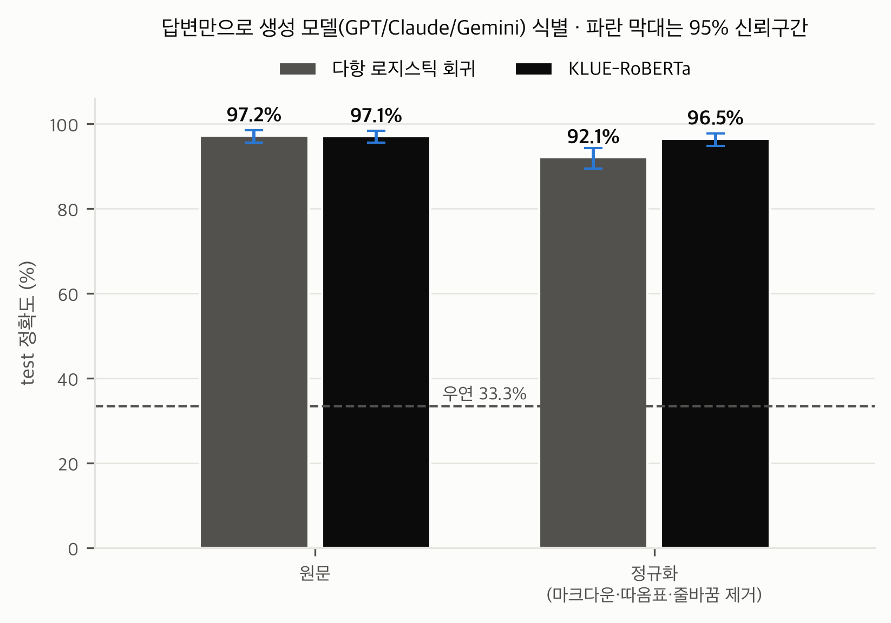
| 분류기 (특성) | 조건 | test 정확도 | 95% CI | GPT 재현율 | Claude 재현율 | Gemini 재현율 | 틀린 답변 |
|---|---|---|---|---|---|---|---|
| 다항 로지스틱 회귀 | 원문 | 97.2% | 95.6–98.5% | 94.5% | 98.9% | 98.3% | 15 / 543 |
| 정규화 | 92.1% | 89.5–94.3% | 86.2% | 94.5% | 95.6% | 43 / 543 | |
| KLUE-RoBERTa | 원문 | 97.1% | 95.6–98.3% | 98.3% | 96.7% | 96.1% | 16 / 543 |
| 정규화 | 96.5% | 94.8–97.8% | 96.1% | 96.7% | 96.7% | 19 / 543 |
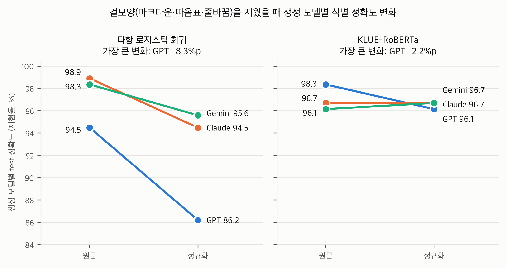
- 다항 로지스틱 회귀 (단순 빈도 통계): 세 모델 모두 떨어지고, 특히 GPT가 94.5% → 86.2%(−8.3%p)로 크게 떨어집니다. Claude는 98.9% → 94.5%(−4.4%p), Gemini는 98.3% → 95.6%(−2.7%p)입니다. 원문에서 GPT를 알아보는 가장 강한 단서였던 둥근 따옴표(“ ”)가 사라졌기 때문입니다.
- KLUE-RoBERTa (문맥 신경망): 세 모델 모두 96~98% 사이에 머뭅니다. GPT만 98.3% → 96.1%(−2.2%p)로 조금 떨어지고, Claude는 96.7%로 같으며, Gemini는 96.1% → 96.7%로 오히려 조금 오릅니다.
- 의미: 겉모양 단서가 사라지면 단순 빈도 통계는 GPT를 헷갈리기 시작하지만, 문맥을 보는 신경망은 세 모델을 고르게 구별합니다. GPT의 개성은 형식보다 문장 수준의 말투에 있어서, 빈도만으로는 덜 드러나고 문맥을 보면 드러난다는 뜻입니다.
해석
- 두 분류기 모두 우연(33.3%)을 크게 넘습니다. 원문에서 다항 로지스틱 회귀(단순 빈도 통계) 97.2%, KLUE-RoBERTa(문맥 신경망) 97.1%로 사실상 같습니다. 원문에는 따옴표·마크다운 같은 강한 표면 단서가 있어서, 단순한 모델로도 충분히 구별됩니다.
- 겉모양을 지우면 두 분류기의 차이가 드러납니다. 정규화 텍스트에서 다항 로지스틱 회귀는 92.1%로 5.1%p 떨어지지만, KLUE-RoBERTa는 96.5%로 0.6%p만 떨어집니다. 두 신뢰구간(89.5–94.3%, 94.8–97.8%)도 겹치지 않습니다. 단어 빈도를 넘어서는 문장 수준의 뉘앙스, 즉 어휘를 어떤 순서와 어조로 엮는지에도 모델마다 차이가 있다는 뜻입니다.
- GPT가 가장 영향을 크게 받습니다. 다항 로지스틱 회귀의 GPT 재현율이 94.5%에서 86.2%로 떨어집니다. 원문에서 GPT의 가장 강한 단서가 둥근 따옴표(“ ”)였기 때문입니다. KLUE-RoBERTa는 정규화 후에도 GPT를 96.1% 맞힙니다.
- 두 분류기는 서로 다른 답변에서 틀립니다. 원문 test에서 둘 다 틀린 답변은 3개뿐입니다(로지스틱만 틀림 12개, RoBERTa만 틀림 13개). 정규화에서는 8개입니다(로지스틱만 35개, RoBERTa만 11개). 두 분류기가 서로 다른 단서를 쓰면서도 같은 결론에 도달한다는 점에서 결과가 강건합니다.
- 확신도도 다릅니다. test 답변 중 정답 모델에 0.9 이상의 확률을 준 비율은 다항 로지스틱 회귀 53~56%, KLUE-RoBERTa 약 96%입니다. 로지스틱은 규제 때문에 확률이 덜 극단적이고, RoBERTa는 문맥 정보까지 써서 더 확신합니다.
6. 지표 정의와 분석 방법
| 지표 | 측정 방법 |
|---|---|
| 글자 수 | 답변 문자열 길이 (공백·줄바꿈 포함) |
| 문장 수 / 문장당 글자 수 | . ! ? 뒤 공백 기준으로 문장을 나눔 |
| 문단 수 | 빈 줄로 구분된 덩어리 수 |
| 굵게 | **가 한 번이라도 있으면 1 |
| 글머리 / 번호 목록 | 줄이 - , * , • / 1. , 1) 로 시작하면 1 |
| 영문 괄호 병기 | 괄호 안에 영문자가 있으면 1. 예: (Federal Bureau of Investigation) |
| 한자 병기 | 한자(U+4E00–9FFF)가 하나라도 있으면 1 |
| 합쇼체 비중 | "니다." 종결 수 ÷ ("니다." + "요.") 종결 수, 답변 평균 |
| 요약형 마무리 | 마지막 문단에 "요약하면, 정리하면, 결론적으로, 요컨대, 한마디로, 종합하면"이 있으면 1 |
| 완곡 표현 | "일반적으로, 보통, 대체로, 경우에 따라, 수 있습니다, 수 있어요" 중 하나라도 있으면 1 |
| 대표 표현 | 어절 1~2-gram별로 "해당 모델 답변 중 사용 비율 ÷ 다른 두 모델 답변 중 사용 비율"의 로그값이 큰 순. 단, 해당 모델 답변의 10% 이상에서 쓰인 표현만 후보로 둠 |
| Qwen 토큰 수 | Qwen/Qwen3-0.6B-Base 토크나이저로 "질문 + 줄바꿈 + 답변"을 세고 EOS 1개를 더함 |
7. 해석할 때 주의할 점
- 이 분석이 보여 주는 범위: 이 분석은 "교사마다 식별 가능한 답변 패턴이 있다"는 것까지입니다. 평가자가 자기 계열 답을 실제로 더 선호하는지는 학생 평가 후 혼합효과모형에서 같은 계열 효과로 보여야 합니다.
- 길이 차이: Claude 답변이 가장 길어서 Claude 학생은 학습 토큰을 더 많이 봅니다. 평가 단계에서 답변 길이를 공변량으로 넣는 것을 권합니다. LLM 평가자는 긴 답을 선호하는 경향이 알려져 있습니다.
- 600자 초과 비율은 세는 기준에 따라 달라집니다. Claude는 공백·기호 포함 43%, 공백 제외 1.4%입니다(3장의 기준별 표). "규칙 위반"으로 단정하지 말고 "Claude가 가장 길게 쓰는 경향"으로 해석하는 것이 안전합니다.
- 지표 방식: 형식 지표는 규칙 기반(정규식)이라 일부 예외가 있을 수 있습니다. 예: 문장 속 "1." 같은 숫자.
- 분류 정확도의 의미: 사람이 아니라 통계 분류기의 정확도입니다. "LLM 평가자가 이 차이를 감지할 수 있다"는 간접 근거로 쓰는 게 적절합니다.
8. 포스터 문구 제안
짧은 버전: "교사 답변의 스타일 지문(fingerprint): 단순 통계(다항 로지스틱) 97.2% · 문맥 신경망(KLUE-RoBERTa) 97.1%, 겉모양을 지워도 92.1% · 96.5%"
9. 관련 파일
inference/output/{gpt,claude,gemini}_train_1200.json: 교사 생성 원본 (Claude id 9341은 null)results/style_analysis.py: 이 분석 전체를 재현하는 스크립트results/output/style_summary.md,style_summary.csv: 요약표results/output/style_features.csv: 답변 3,597개의 지표 원자료results/output/fig_style_table.png,fig_style_bars.png: 포스터용 그림 (300dpi)classify/common.py: 데이터 분할, 정규화, 예측 저장, bootstrap, 혼동행렬 등 공통 함수classify/logistic.py,classify/roberta.py,classify/compare.py: 분류 실험 재현 스크립트 (roberta.py는--plot-only,--predict-only옵션 지원)classify/output/split.json: 질문 id별 train/val/test 분할classify/output/logistic/:metrics.json, 답변별 예측predictions_{raw,norm}_{val,test}.csv, 가중치 상위 200개weights_{raw,norm}.csv, 그림classify/output/roberta/: 하이퍼파라미터와 전체 학습 기록metrics_{raw,norm}.json, 답변별 예측 CSV, 그림classify/output/compare_accuracy.png,compare_per_model.png,compare.md: 두 분류기 × 두 조건 비교, 생성 모델별 변화classify/checkpoints/roberta_{raw,norm}/best/: RoBERTa 최종 모델 가중치 (git 제외)